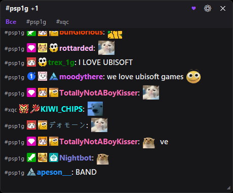
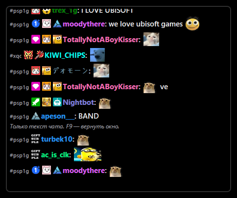
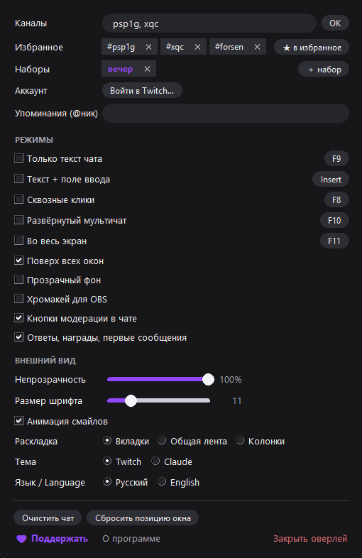

Windows · бесплатно · open source
Лёгкое окно с чатом, которое держится над любой игрой и приложением. Смайлы 7TV с анимацией, вкладки каналов, подсветка упоминаний — как настоящий чат, только всегда на виду.
Держится над играми и приложениями. F11 — во весь экран, кнопка «—» сворачивает в панель задач. Для игр — режим «оконный без рамки».
Убирает рамку и фон: над игрой парит один чат, клики проходят насквозь. F8 — сквозные клики. Все клавиши переназначаются.
Компактный оверлей разворачивается в большое окно. Три раскладки: вкладки, общая лента, до 4 каналов колонками бок о бок.
Анимированные двигаются, как в чате. Пикер с поиском вставляет смайлы в сообщение. При блокировке 7TV картинки идут через зеркала — VPN не нужен.
Цвета ников, настоящие значки, клик по нику открывает профиль. Счётчики непрочитанных на вкладках, упоминания и ответы подсвечиваются, окно мигает.
Войдите через Twitch — внизу появится поле ввода. Модераторам — кнопка-мегафон: текст уходит цветным объявлением.
Там, где у вас модерка, перед сообщениями кнопки: бан, таймаут, варн, удалить. Правый клик по нику — карточка действий.
Любимые каналы — в один клик, наборы «вечер», «турниры», «друзья» подключаются целиком одним нажатием.
«Захват окна» в OBS + фильтр «Цветовой ключ» — зрители видят прозрачный чат, ваш экран не меняется.
Полная история — в релизах на GitHub.
Скачайте TwitchChatOverlay.exe — устанавливать ничего не нужно.
Запустите и введите название канала — можно несколько через запятую.
Перетащите куда удобно. Правый клик или ⚙ — настройки. F9 — только текст, F7 — текст + поле ввода, F10 — мультичат, F11 — во весь экран.
⚠️ SmartScreen при первом запуске покажет «Windows защитила ваш компьютер»: нажмите «Подробнее» → «Выполнить в любом случае». Это стандартное предупреждение для программ без платной цифровой подписи — код открыт, его можно проверить на GitHub.


